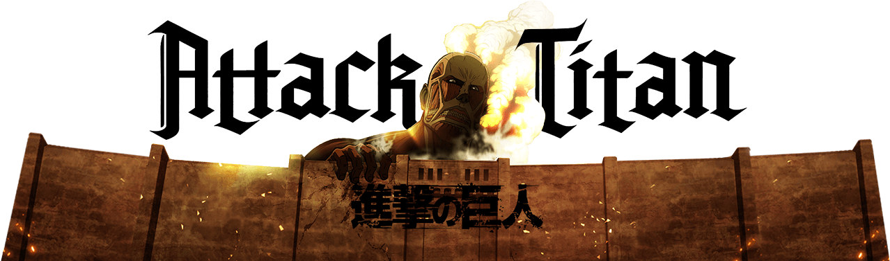
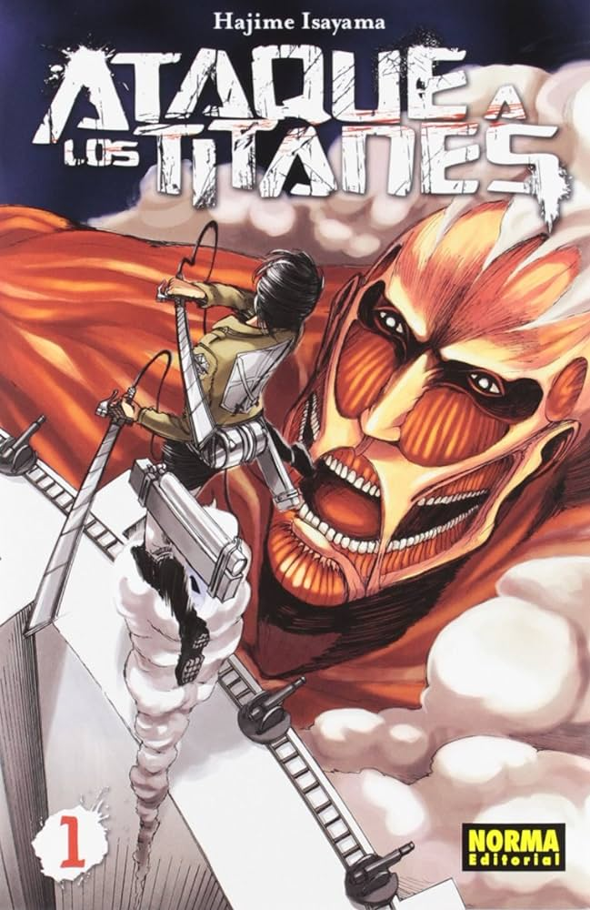
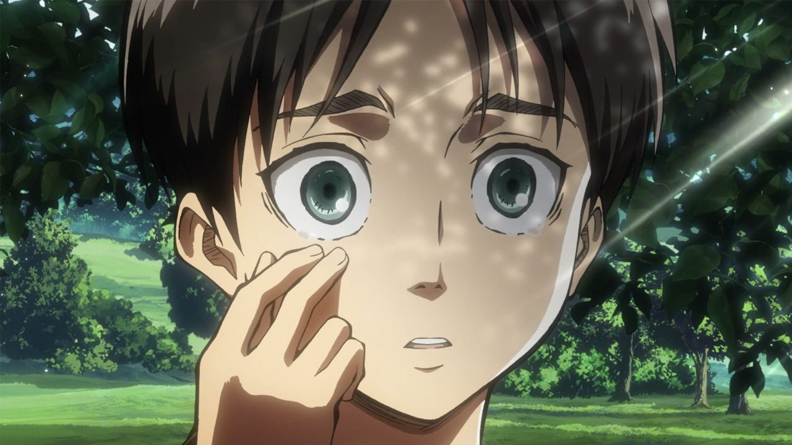
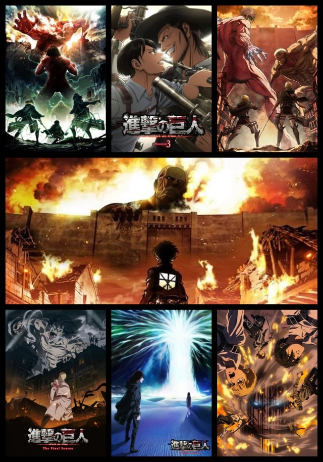

Informacion interesante de Shingeki no Kyojin
Shingeki no Kyojin (Ataque a los titanes) es una serie de manga japonesa escrita e ilustrada por Hajime Isayama. Comenzó a publicarse en septiembre de 2009 en la revista Bessatsu Shōnen Magazine de la editorial Kōdansha y finalizó en abril de 2021, tras doce años de publicación mensual, con un total de 139 capítulos. El manga está disponible en España a través de Norma Editorial, en Argentina por Ovni Press y en el resto de Hispanoamérica por Panini.

La historia sigue a Eren Jaeger, quien vive en un mundo ficticio donde la humanidad enfrenta la amenaza de extinción debido a unas criaturas humanoides conocidas como titanes. Para sobrevivir, los humanos se han refugiado detrás de tres enormes murallas. Tras perder a su madre a manos de los titanes, Eren, junto con sus amigos de la infancia, decide unirse al ejército con el propósito de vengarse y destruir a estas criaturas. Más adelante, descubre que posee la habilidad de transformarse en un titán con características especiales, lo que desencadena una serie de eventos que afectan tanto a su vida como a quienes lo rodean.

La obra fue adaptada a una serie de anime dirigida por Tetsurō Araki y producida por Wit Studio en colaboración con Production I.G. La primera temporada se emitió entre abril y septiembre de 2013. La segunda llegó en 2017, mientras que la tercera se transmitió en dos partes: la primera entre junio y octubre de 2018, y la segunda entre mayo y junio de 2019. La cuarta y última temporada, producida por el estudio MAPPA, se dividió en tres partes, transmitidas entre 2020 y 2023.

Desde su publicación, Shingeki no Kyojin ha sido un éxito comercial tanto en Japón como a nivel internacional, alcanzando millones de copias vendidas y logrando altos niveles de audiencia con su adaptación al anime. La obra ha recibido múltiples premios y reconocimientos, además de generar una amplia variedad de productos derivados, como novelas ligeras, videojuegos, OVAs, películas de acción real, parodias y una futura producción a cargo de Warner Bros.
Sinopsis
La historia está ambientada en la isla «Paradis», ubicada al noreste del país de «Marley», en donde Eren Jaeger vive con su familia; con su hermana adoptiva, Mikasa Ackerman; y con su mejor amigo, Armin Arlert. Su pueblo colinda con la «muralla María», la más externa del Reino de las «tres murallas». Estas enormes murallas fueron construidas cien años atrás, con el fin de protegerse de los «titanes», criaturas de entre tres y sesenta metros de alto que casi aniquilaron a la humanidad. Además de su gran tamaño, los titanes se caracterizan por su estructura corporal parecida a la de los humanos, a quienes devoran de forma instintiva, y la única manera conocida de matarlos es cortándoles la nuca.
La población humana ha sido capaz de vivir en una paz incómoda dentro de las murallas hasta el día en que aparece un titán de sesenta metros, que puede asomar la cabeza por la muralla María y que de una patada logra crear una grieta en la misma. Esto permite la entrada de titanes más pequeños a la ciudad y provoca la evacuación masiva de toda la población superviviente hacia el interior de la muralla intermedia, «Rose». Durante dicho ataque, Eren observa aterrado cómo su madre, Carla, es devorada por un titán mientras que su padre, Grisha, ha desaparecido de forma extraña, lo que lo deja con Mikasa y Armin como sus únicos compañeros. Eren jura vengar la muerte de su madre y la pérdida de su ciudad, por lo que se enlista en el «Ejército de las Murallas» junto con sus amigos.
Cinco años después, los tres jóvenes se gradúan de cadetes en el «Distrito de Trost», situado a las afueras de la muralla Rose. Un día, frente a Eren y sus compañeros del ejército aparece el mismo titán gigantesco que devastó su hogar, ahora dispuesto a destruir la muralla Rose, y la pesadilla vuelve a repetirse. En medio del combate, Eren es devorado por un titán mientras rescata la vida de Armin. En otro lugar, Mikasa lucha por sobrevivir hasta que es salvada por un titán musculoso y atípico que ayuda a los humanos a ganar la batalla en Trost, solo para descubrir que es Eren quien se transformó en ese titán, para sorpresa de todos. Algunos, como los nobles, el clero y la Policía Militar, lo consideran una amenaza, mientras que la Legión de Exploración ven a esta habilidad como una oportunidad de salvar a la humanidad y vencer a los titanes. En consecuencia, Eren se somete a un juicio militar, en el que se determina que se una a la Legión de Exploración en el «escuadrón de operaciones especiales» bajo el mando y supervisión directa del capitán Levi.
Conforme avanza la historia, se revelan muchos misterios respecto a la habilidad de transformación de Eren, cuyo poder obtuvo gracias a su padre; el motivo por el que lo adquirió; y el hecho de que no es el único humano que posee dicha capacidad. Se descubre también la procedencia y origen de los titanes —mediante la historia de Ymir Fritz—, la revelación de sus verdaderos enemigos —como la nación de Marley y el mundo entero— y de las decisiones que Eren deberá tomar respecto al futuro de la humanidad, el de sus amigos y el suyo.